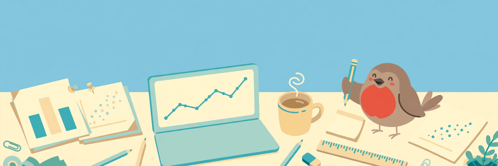

Welcome to the workshop. Remy the robin runs the bench: charts on the wall, numbers on the table, and everything about R within reach.
Type numbers, separated by commas or spaces, and the bench works out the count, sum, mean and median — and shows you the R code that does the same thing.
Try: 3, 7, 7, 10.
From record JAH-PROG-015-000013, Quiz: R. Pick an answer and the bench tells you straight away.
1. Who created R?
2. What paradigm is R?
3. What is the file extension for R source files?
All products are free, with no sign-in and no payment. The Signature shelf — original frameworks, mnemonics, stories and blueprints — is on Group 6 — Signature data.
R is a functional, procedural programming language with dynamic typing, created in 1993 by Ross Ihaka and Robert Gentleman, used for statistics and data analysis. This themed version is the creative one of the seven R websites: the plain facts live on Group 5 — Data alone, the questions-and-answers on Group 3 — the R AI, the code maker on Group 4 — generator, and the full website with its wiki on Group 1.
This website belongs to The 'Merica-L Internet: the front door is the 'Merica-L Virtual Internet, the network's main page is 'Merica-L Boundless Ecosystem OS, and the databases live at the database hub.
Free forever. No sign-in, no payment, no tracking. Remy the robin runs the bench.
Property of Justin Addam Higgins (JAH). Public records organized in the Signature system.